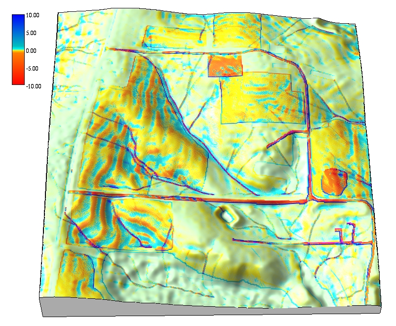
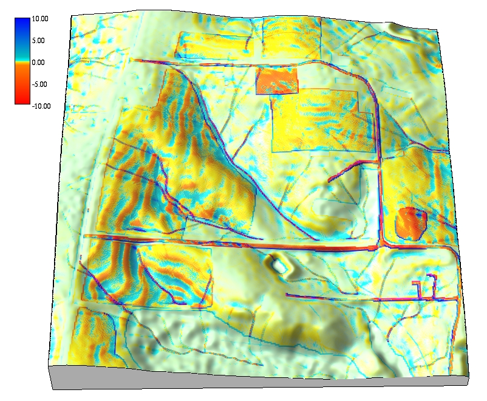

Hydrologic and Erosion Modeling
Helena Mitasova
Learning objectives
- identify geospatial modeling of landscape processes
- distinguish spatially averaged and distributed models
- compare methods for spatial hydrologic modeling
- apply modeling soil erosion, sediment transport and deposition
Geospatial modeling of processes
- Numerical simulations: tools for gaining new knowledge - virtual experiments
- Geospatial simulations: the modeled quantities are function of a location on Earth
- Geospatial models have evolved:
- from: empirical, spatially averaged, static
- to: process-based, distributed, dynamic with
the aim to predict modeled quantity at any point in space and time
Most models combine both approaches
Modeling components
When modeling landscape processes we need to consider:
- Modeled quantity [units]: water, pollutant, vegetation, population density, individual organism, ...
- Spatial and temporal scale
- Configuration space and interactions: modeled quantity as function of environmental variables, e.g., topography, land cover, infrastructure...
- Governing equations or rules: continuity, mass preservation, diffusion, ...
Geospatial representation
Modeled quantities and environmental variables can be represented by continuous georeferenced fields
To support numerical simulations these fields need to be discretized:
- spatially averaged units: discrete polygons (hydrologic units, hillslope elements, landscape patches)
- spatially distributed representation: structured and unstructured meshes, or random particles
Modeled quantities can also evolve along networks or represent discrete objects (particles, agents)
Spatially averaged models
- Spatially averaged models predict the modeled variable for each averaged unit, such as watershed,
the result is discrete polygons or a number

Spatially distributed models
- Spatially distributed or spatially explicit models predict
the variable at any point in space and the result is continuous field

Geospatial modeling and GIS
- workflow using standard GIS tools: simple empirical models with physics based components
- models fully integrated as modules: complex physics-based or empirical models
- models linked to GIS as extensions or add-ons: common structure and interface
- complex modeling systems linked through data: GIS is used for input data processing,
results analysis and visualization, but the model is independent from GIS.
- complex modeling systems can incorporate selected GIS capabilities
Hydrologic modeling
surface water flow (overland flow, channels),
Spatially Distributed Hydrologic Models
From geometry-based routing to process-based continuity equation

Dynamic Hydrologic Models
Flow modeling with diffusion term: process-bsed simulation of flow through depression

Path sampling method
- based on duality between particle and field representation
- path samples represent water evolving according to the shallow
water bivariate continuity equation - drift and diffusion
- Green's function


Variable rainfall excess and flow velocity
Hydrologic modeling: small agricultural watershed
Overland water flow

Hydrologic modeling: suburban application
High resolution (sub-meter) modeling of runoff

Erosion modeling
Motivation: sustainable land use management
- analysis of spatial pattern of sediment flow,
- identification sediment sources and sinks,
- design of conservation measures
Erosion modeling: equations
General equation with stream power, sediment transport and erosion and deposition
as change (divergence) in sediment flow
RUSLE, empirical equation, process-based interpretation and GIS implementation
Erosion modeling: parameters
Figures and equations from erosion chapter, impact of exponent
Spatially distributed erosion models
Application to small rural watershed
 

Sediment transport modeling

Erosion modeling: landchange application
Impact of construction on overald flow and erosion
Note the highest erosion rates along the stream banks
Summary
- we have defined types of models